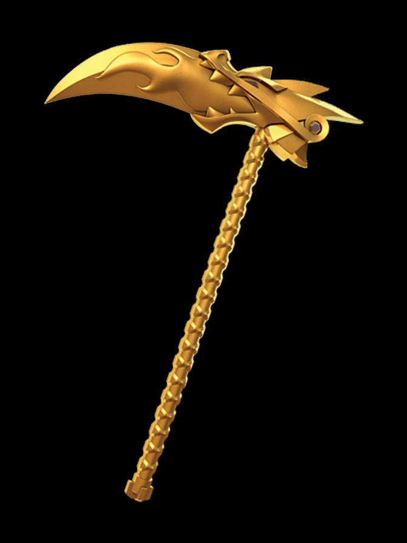

Scythe of Quakes
The Golden Weapon of Earth. Plant its blade and the ground itself obeys: earthquakes, fissures, the earth swallowing enemies whole. But the Scythe chooses its master — it refused Nya outright, and it will refuse you too if the earth does not know your name.

Scythe of Quakes
Metaphysical Law: The earth does not negotiate. It decides.
Properties & techniques
Exact player-facing procedures
Field notes. Subject: the ground's veto. Three truths govern it. First: the Scythe never strikes the enemy directly — it strikes the ground, and the ground strikes the enemy. Every offensive property requires the blade planted in earth or stone; on open water, midair, or worked metal floors, Quake Slam and Swallow simply do not function, because the Scythe's jurisdiction is the earth, not the air above it. Second: the weapon is the only Golden Weapon that controls rather than releases — it does not shoot earth, it commands the earth already there, which is why its authority ignores cover and elevation; you cannot hide from the floor. Third: the attunement demand is not ceremony, it is geology. The Scythe refused Nya because she was a Master of Water, and it will refuse any wielder the earth does not recognize. A refused wielder holds a very sharp, very heavy, very ordinary scythe.
Relic profile
2d8 slashing (heavy, two-handed) · +4 to attack and damage rolls · Relic DC
Jujutsu origin
Forged by the First Spinjitzu Master from the gold of the Golden Peaks, one of four weapons that created Ninjago itself. When the weapons' story crossed into our archive, the jujutsu reading was immediate: this is not an earth technique in a handle. It is the earth's standing permission, granted once, to whoever the ground accepts. Cole carried it because the earth knew him. The Scythe remembers.
Quake Slam — Action · 3 CE
Plant the blade in earth or stone. Every creature within 30 ft on the ground makes a DEX save vs your Relic DC: 4d10 bludgeoning and knocked prone on a failure, half damage and standing on a success. The ground becomes difficult terrain for 1 minute. Structures and constructs of stone take double damage.
Swallow — Action · 5 CE
Carve a fissure 10 ft wide, 30 ft deep, and 60 ft long in a line. Each creature in the line makes a DEX save vs your Relic DC: on a failure it falls in, taking 6d10 bludgeoning and becoming restrained; on a success it moves to the nearest safe edge. Climbing out costs 30 ft of movement. The fissure seals at the start of your next turn — anything still inside takes 6d10 bludgeoning as the earth closes.
Stone-Cutter
Attacks with the Scythe ignore resistance to slashing from constructs of stone or earth, and the blade cuts through 5 ft of nonmagical stone per round outside combat. Cover made of earth or stone grants no bonus against the Scythe's quakes.
Tread Assault — 1 hour ritual, once per dawn
The Scythe unfolds into a golden vehicle, as it did for Cole. It becomes a Large mount with speed 60 ft, carrying you and one passenger over any earth or stone terrain, ignoring difficult terrain. It reverts if you are knocked off or dismiss it as a bonus action.
Binding Vow — The Scythe Chooses
The Scythe grants its full power only to a wielder the earth recognizes — the GM judges affinity (earth techniques, stone sorcery, a life spent underground). All others are refused: damage dice from Quake Slam and Swallow are halved, Tread Assault is unavailable, and on a natural 1 the Scythe goes inert until the end of your next turn. It is not responding.
Cursed-tool attunement
Campaign canon